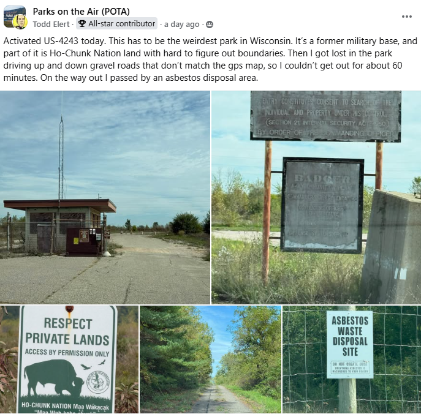
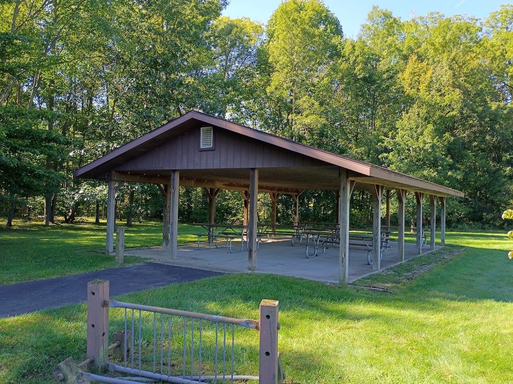

POTA Sends Activators to Toxic Waste Dumps?
I've been following the Reckless Ben Bricks & Minifigs saga, and one of the lines that stuck with me was the intentionally provocative phrase, “Bricks & Minifigs steals from old people.”
Then I saw a post in a POTA Facebook group from an activator at US-4243 in Wisconsin. The operator described a former military base, difficulty navigating the property, nearby Ho-Chunk Nation land that was off limits, and passing an asbestos waste disposal area on the way out.

The POTA post that got me thinking about how we decide what qualifies as a park entity.
My immediate thought was:
Obviously, POTA didn't actually send anyone there. The operator chose the location, and the property qualifies under POTA's rules. But that absurd-sounding sentence highlights something I've increasingly questioned: Are we defining good amateur-radio park entities by the right criteria?
Meanwhile, I Was Doing “Deprogrammed POTA”
That same day, I was doing what I've jokingly started calling “deprogrammed POTA” at Chikaming Township Park & Preserve in Michigan.
And the contrast couldn't have been much greater.
Chikaming is the kind of place most people would recognize immediately as a park. It has trails, maintained grounds, picnic facilities, a pavilion and other amenities intended for people to actually visit and enjoy.

One small detail particularly impressed me: accessible picnic tables.
We have someone in our amateur-radio community whose child uses a wheelchair, so accessibility is something I've become more conscious of when looking at potential operating locations. These tables were designed so someone using a wheelchair could actually sit at the table with everyone else.
Despite all the state and national properties I've visited while operating portable, I don't recall encountering that particular feature before.
Yet this township park isn't a POTA entity.
What Makes a Good Park Entity?
That's where I think the current philosophy deserves discussion.
The question shouldn't simply be “Which level of government owns this land?”
I'm not arguing that every municipal park in America needs a POTA number. That would create its own problems. But when an ownership rule can qualify an obscure former military property containing an asbestos disposal area while excluding a maintained, accessible community park, I think it's fair to ask whether ownership has become more important than the quality and purpose of the place itself.
For me, Chikaming Township Park & Preserve was exactly what portable amateur radio should encourage me to discover.
It just wasn't POTA.
And I had a great activation anyway.